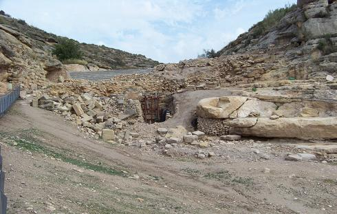
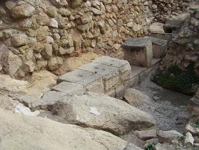
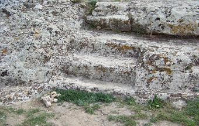
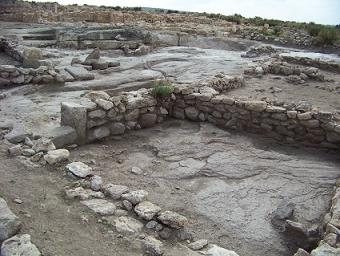
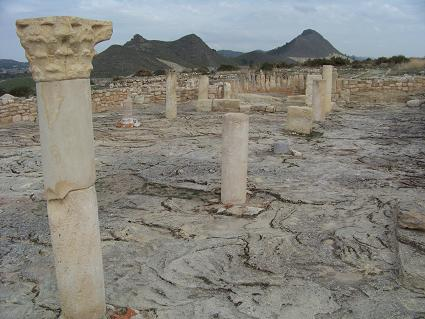
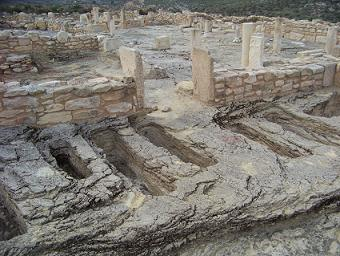
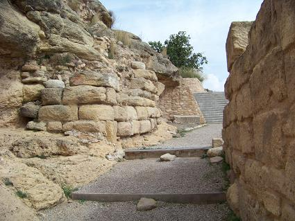
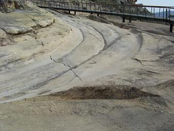
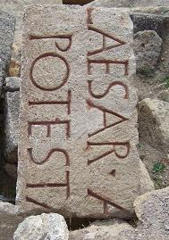
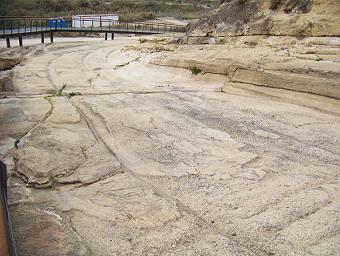

|
"El
TOLMO DE MINATEDA"
El Tolmo de Minateda se localiza a unos 9 km. de
Hellín.
Habitado desde la Edad de Bronce, 1500 a.e.c. Accedemos al yacimiento por
un camino tallado en la roca, pasando por las diferentes murallas, íbera,
romana y visigoda; cisternas, almazaras y restos de viviendas, hasta
llegar en la meseta donde se halla la basílica visigoda.
|
 |
 |
 |
La basílica visigoda forma parte de un complejo de edificaciones que
por su importancia creen los arqueólogos que se corresponde con la sede
episcopal de la "Elotana". La
basílica es de las más antiguas del antiguo condado de Teodomiro,
con tres naves separadas por columnas, ábside en la cabecera y un
baptisterio a los pies, que al parecer sufrió varias reformas. El
recorrido termina descendiendo por unas escaleras talladas en la piedra
hasta la necrópolis, que conserva restos de tumbas desde la época ibérica.
Al norte del cerro son visibles los restos de monumentos funerarios
escalonados de época republicana, hechos con sillería o adobe. En su
interior se encontró una urna con las cenizas y su ajuar. Por encima se
han documentado niveles de época imperial, con sepulturas de cremación en
urnas depositadas en hoyos abiertos en el suelo.
|
 |
 |
 |
En época romana fue llamada Ilunum, la Ilunum de Ptolomeo, los visigodos
le llamaron Eio o Elo y los árabes lo conocieron como Madînat Yyih.
De la Edad de Bronce se ha encontrado un enterramiento con el difunto en
posición fetal. Durante la civilización íbera, se siguen utilizando como
lugar santo, túmulos y monumentos funerarios; y se construye una muralla
realizada en mampostería.
En época romana se refuerza la muralla y es cuando surge la ciudad como
tal. Todo indica que vivían en el llano, dejando la parte alta, lo que es
el Tolmo de Minateda, reservada a los edificios públicos. Con una posición
estratégica, controlaba la vía de comunicación que enlaza Cartago Nova y
Complutum. Posteriormente continuaron reforzando el sistema defensivo y se
construye una puerta, un baluarte y una torre, dispuestos en forma de “L”,
y el complejo público.
Gracias a las lluvias torrenciales en 1987 se pusieron al descubierto una
serie de grandes bloques de sillares en la zona del Reguerón, con una
serie de inscripciones de la época romana imperial. Abundan los silos y
cisternas de almacenamiento de líquidos y restos de conjuntos artesanales,
especializados en la elaboración del aceite o el vino. También destacan
las carriladas labradas por las ruedas de los carros que conducía al
interior de la ciudad. |
 |
|
 |
 |
 |
También destacamos:
- El museo donde están depositados los hallazgos arqueológicos
descubiertos durante las campañas de excavación.
- Las Pinturas rupestres de Minateda, declaradas Patrimonio de la
Humanidad por la Unesco. El Abrigo mayor está compuesto aproximadamente
por unas 400 figuras de ciervos, toros, équidos y cabras. También hay
grupos de mujeres con largas faldas, cacerías de ciervos, arqueros y una
mujer con un niño de la mano. Las pinturas están datadas desde el 6.000 al
1.500 a.e.c.
- Los llamados puentes romanos de Isso, se localizan en la pedanía de Isso,
en la carretera de Hellín a Elche de la Sierra, sobre el km 10. Aunque de
siempre se les ha considerado como romanos, se cree que son del siglo
XVIII, al menos el puente mayor sobre el Río Mundo.
|